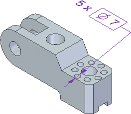

Smart Depth tab (Dimension Style, Dimension Properties)
The Smart Depth tab sets hole, slot, and thread depth properties for dimensions and for the annotations that reference holes, slots, and threads. These annotations include hole callouts, feature callouts, and balloons. All options are specified as a ratio of the text value.
- Hole Depth
-
Note:
When you select the Smart Depth
 option or type %ZH on the Feature Callout tab, Solid Edge reads the following data fields.
option or type %ZH on the Feature Callout tab, Solid Edge reads the following data fields.- Through
-
Specifies the hole depth information in a callout for a hole that enters one surface and exits the next surface (a through hole).
- Finite depth
-
Specifies the hole depth information in a callout for a hole that enters one surface but does not penetrate the next surface (a hole of finite depth).
- Slot Depth
-
Note:
When you select the Smart Depth
option or type %ZH on the Feature Callout tab, Solid Edge reads the following data fields.- Through
-
Specifies the slot depth information in a callout for a slot that enters one surface and exits the next surface.
- Finite depth
-
Specifies the slot depth information in a callout for a slot that enters one surface but does not penetrate the next surface (a slot of finite depth).
- Thread Depth
-
Note:
When you select the Smart Thread Depth
 option or type %ZT on the Feature Callout tab, Solid Edge reads the following data fields.
option or type %ZT on the Feature Callout tab, Solid Edge reads the following data fields.- Through
-
Specifies the thread depth information in a callout for a thread depth that runs throughout a hole.
- Finite depth
-
Specifies the thread depth information in a callout for a finite thread depth. A finite thread depth enters one surface and goes a specified distance, but does not penetrate the next surface. A finite thread depth does not necessarily run through the same depth of the hole in which it is placed.
- Hole Quantity Note
-
Specifies the hole count information to be included whenever %QN is entered in a hole callout, feature callout, or dimension prefix. The content specified in the Hole Quantity Note box is displayed only when the hole count quantity is greater than one.
- Quantity (%QN)
-
You can enter the property text codes listed in the following table to specify which holes to count. There are three ways to count the hole features in the callout.
Example:The default Hole Quantity Note is %QC X, where %QC counts the coplanar holes and X is the plain-text multiplication symbol used to complete the prefix. The number of equivalent coplanar holes must be greater than one for the hole quantity to be displayed in the callout.

Enter this
To count this type of hole feature
Resulting hole callout
%QC
Quantity-Coplanar
Counts equivalent holes on the same plane and with axes that are parallel and pointed in the same direction. Use this option to count holes in a hole pattern.

%QP
Quantity-Parallel
Counts equivalent holes sharing the same orientation (the axes are parallel and pointed in the same direction).

%QA
Quantity-All
Counts equivalent holes in the part, based solely on hole parameters. Holes can be located on faces with different orientations.

%QD
Quantity-User Defined
Identifies the holes of the same type, diameter, and depth. You can then click the Referenced Geometry
 and select the required holes from the highlighted holes to consider them for hole
dimension.Note:
and select the required holes from the highlighted holes to consider them for hole
dimension.Note:The holes which are already toleranced with a separate dimension are not considered.
%QD X and selecting the reference geometries

Note:Equivalent holes are those with at least two identical parameters in the Hole Options dialog box, including hole type. Valid hole types are simple, counterbore, countersunk, and tapered. They can be threaded, as long as the thread is applied within the Hole command.
- Symbols and Values
-
 —Opens the Select Symbols and Values dialog box for you to generate the appropriate symbols and model-derived values without having
to type the property text codes yourself. Examples of the types of symbols you can
select include ± (plus minus), ° (degree), and ∅ (diameter). Examples of model-derived
values include hole references, bend data, and weld beads.
—Opens the Select Symbols and Values dialog box for you to generate the appropriate symbols and model-derived values without having
to type the property text codes yourself. Examples of the types of symbols you can
select include ± (plus minus), ° (degree), and ∅ (diameter). Examples of model-derived
values include hole references, bend data, and weld beads. - Format
-
Modifies the format of the property text string output value at the cursor position in the Hole Depth, Slot Depth, and Thread Depth boxes.
Displays the Format Values dialog box for you to choose the formatting. You can apply formatting to each valid property text string. The type of formatting you can apply depends on your cursor position when you select the Format button.
For more information, see Format property text values.
- Special characters
-
Specifies mechanical font characters for the text boxes. The available special characters are diameter, square, counterbore, countersink, depth, initial length, arc length, plus/minus, degree, between, statistical tolerance, and carriage return.
- Feature reference
-
Specifies hole, slot, and thread reference attributes for the text boxes. The available attributes are size, depth, counterbore size, counterbore depth, countersink size, countersink angle, thread size, and thread depth.
Look up more details
Dimension Properties dialog boxGeneral tab (Dimension Style and Dimension Properties)
Units tab (Dimension Style and Dimension Properties)
Secondary Units tab (Dimension Style and Dimension Properties)
Text tab (Dimension Style and Dimension Properties)
Lines and Coordinate tab (Dimension Style and Dimension Properties)
Spacing tab (Dimension Style and Dimension Properties)
Terminator and Symbol tab (Dimension Style and Dimension Properties)
Annotation tab (Dimension Style and Dimension Properties)
Feature Callout tab